La pagina non deve nascondere il processo. Deve mostrarlo. Per questo il testo editoriale
è accompagnato da blocchi grezzi: appunti, dubbi, dialoghi e ragionamenti originali.
Il primo pensiero
L’idea nasce da una domanda pratica: come raccontare due app senza trasformarle in pubblicità?
La risposta è stata costruire storie in cui le app vengono usate naturalmente per risolvere situazioni reali.
È qui che ImmoBit e AutoBit smettono di essere solo prodotti e iniziano a diventare strumenti narrativi.
Archivio grezzo · La prima formulazione dell’idea
Ho deciso,
che il modo migliore per pubblicizzare le mie app
è quello di creare un fumetto in cui i protagonisti
le useranno per risolvere le situazioni.
Lo stile che ho scelto, visto il target di riferimento,
ossia 20 - 60 anni / uomo - donna,
deve essere European ligne claire.
Non sono uno scrittore di fumetti e dialoghi,
vorrei solo che dal lancio della prima puntata,
chiamiamola così, il tema abbia una sua evoluzione,
magari arriveremo a 5 oppure 10 oppure 20 puntate, non saprei.
Non serve che gli episodi seguano un collegamento temporale,
magari quello potremmo farlo per gli ultimi 2 o 3.
Ora le app in questione sono
https://play.google.com/store/apps/details?id=com.memmolalabs.immobit
https://play.google.com/store/apps/details?id=com.memmolalabs.autobit
Dimmi che ne pensi.
La scelta dello stile
La direzione visuale nasce da una scelta precisa: European ligne claire. Uno stile leggibile,
adulto, professionale, non fotorealistico e adatto a raccontare case, auto, tecnologia e dettagli.
Il mondo è illustrato. L’app è precisa.
Questa regola mantiene la distanza dal fotoromanzo e rende il progetto riconoscibile come graphic novel tech europea.
// Filosofia narrativa
Niente product placement
Il punto non è mostrare funzioni. Il punto è mostrare decisioni, dubbi, rischi e dettagli che cambiano tutto.
Le app come strumenti narrativi
ImmoBit e AutoBit devono entrare nella storia come entrerebbero un taccuino, un archivio,
una macchina fotografica o uno strumento professionale: senza gridare, ma diventando necessari.
Archivio grezzo · Non fare product placement
Il punto chiave: NON fare “product placement”
Qui c’è la differenza tra:
un progetto che la gente ignora
e qualcosa che può davvero crescere
Le app non devono sembrare:
“guardate la mia app”
Devono sembrare:
“questo personaggio usa naturalmente questo strumento.”
Quasi come:
Batman → Batcomputer
detective → archivio
pilota → strumenti
giornalista → macchina fotografica
Le tue app devono diventare:
strumenti narrativi.
// Costruzione del mondo
Europa contemporanea realistica
Il mondo narrativo non è fantascienza. È una versione più osservativa del nostro mondo:
città europee, app reali, problemi quotidiani, tecnologia discreta e tensione sottile.
Il mood
Le storie devono respirare come piccoli thriller realistici: silenzi, pioggia leggera,
bar moderni, uffici immobiliari, concessionarie, parcheggi sotterranei, tablet e documenti.
Archivio grezzo · Fase 1, creare il mondo
FASE 1 — Creare il “mondo”
Prima ancora della storia.
Devi definire:
atmosfera
città
tipo di persone
livello di realismo
tono emotivo
Ti consiglio questo mood:
“Europa contemporanea realistica”
Tra:
Milano
Bruxelles
Lione
Torino
Amsterdam
Atmosfera:
elegante
urbana
leggermente malinconica
professionale
tecnologica
realistica
// Personaggi
Prima il metodo, poi i volti
I personaggi nascono da una funzione narrativa: qualcuno osserva, qualcuno fa domande,
qualcuno porta conflitto. Da lì emergono Elena e Luca.
Elena Moretti
Elena osserva gli immobili come se fossero memorie fisiche. Pareti, odori, luce,
silenzi e dettagli nascosti diventano segnali.
ImmoBit è il suo metodo: checklist, note, punteggi, confronti, promemoria e report.
Luca Romano
Luca legge le auto come Elena legge le case. Usura, documenti, motore, vernice,
interni e venditore raccontano una storia.
AutoBit è la sua memoria tecnica: valutazioni, confronti, report e promemoria.
La struttura iniziale dei personaggi
All’inizio non serviva un cast enorme. Serviva una dinamica semplice:
chi sa leggere i dettagli e chi rappresenta il dubbio del pubblico.
Archivio grezzo · Fase 2, creare due protagonisti
FASE 2 — Creare 2 protagonisti
NON 10.
Due bastano.
Protagonista 1
Quello razionale.
Caratteristiche:
osservatore
parla poco
molto analitico
elegante ma semplice
usa naturalmente Immobit e Autobit
Età:
35–45
Protagonista 2
Quello emotivo.
Caratteristiche:
impulsivo
curioso
umano
fa domande
crea conflitto narrativo
Età:
28–38
Perché servono entrambi?
Perché il lettore è il personaggio impulsivo.
Archivio grezzo · Dialoghi naturali
Esempio perfetto di dialogo naturale
SBAGLIATO
“Con Immobit possiamo analizzare il mercato immobiliare.”
(pubblicità)
GIUSTO
“Aspetta… qualcosa non torna.”
“Che intendi?”
“Il prezzo è troppo basso per questa zona.”
Poi compare l’app.
Questo è storytelling.
// Episodio pilota
La prima storia doveva essere semplice
Non serviva partire con una saga enorme. Bastava un caso forte, chiaro, quotidiano:
un appartamento perfetto, forse troppo perfetto.
L’appartamento perfetto
La prima struttura narrativa è costruita come un micro-thriller:
apparenza, dubbio, osservazione, verifica, scoperta e frase finale.
Archivio grezzo · Struttura del pilota
Struttura PERFETTA per iniziare
Episodio 1
“L’appartamento perfetto”
Trama semplicissima:
una coppia visita un appartamento incredibile
prezzo stranamente basso
tutto sembra perfetto
il protagonista nota dettagli incoerenti
usa Immobit
scopre storico problematico
la vendita salta
ultimo pannello ambiguo
Fine.
Archivio grezzo · Pipeline moderna
Pipeline moderna
1. Scriviamo la scena
Io ti aiuto.
2. Creiamo storyboard semplice
Anche stickman va bene.
3. Generi i pannelli con AI
Mantenendo:
stesso stile
stessi personaggi
stessa palette
4. Tu fai da regista
Non da disegnatore.
Questa è la chiave mentale.
La tua vera skill sarà:
la regia visiva
// Archivio visuale
Le app prima delle storie
Gli screen mostrano perché il progetto funziona: le app erano già credibili come strumenti professionali,
quindi potevano diventare parte naturale del mondo narrativo.
Archivio interfaccia ImmoBit
Checklist, scoring, archivio, confronto e PDF diventano la grammatica narrativa della serie.
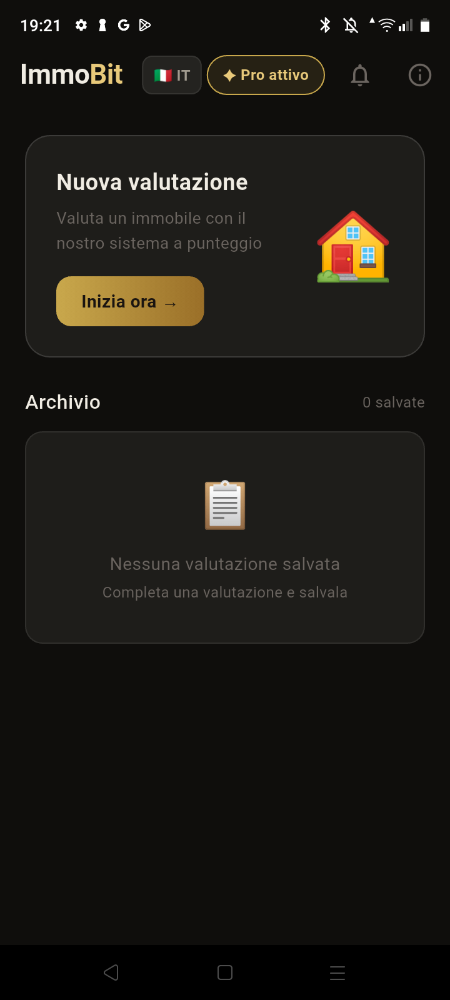
Home · punto di ingresso
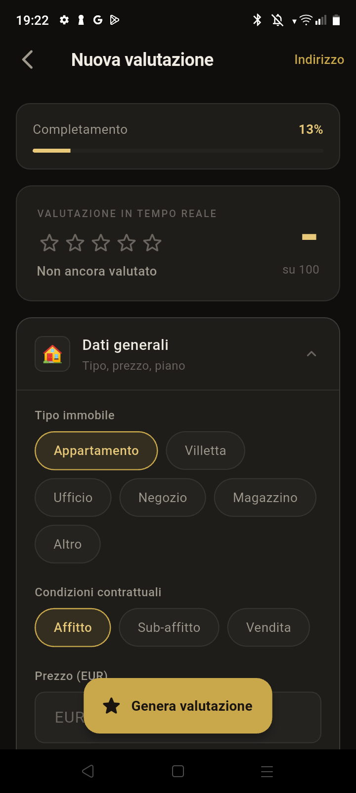
Checklist · osservazione
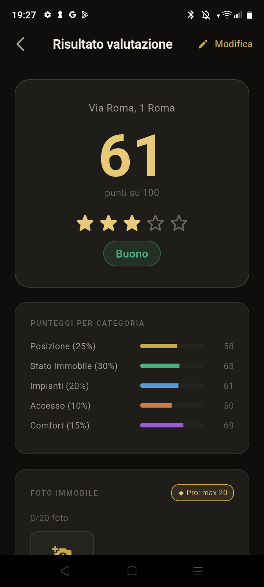
Scoring · decisione
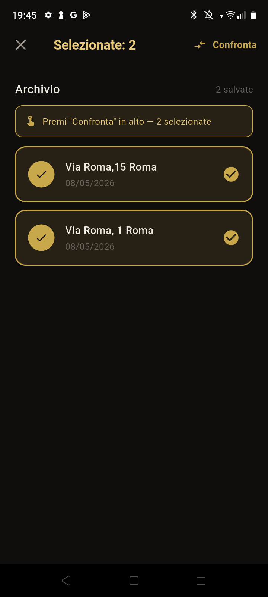
Confronto · scelta
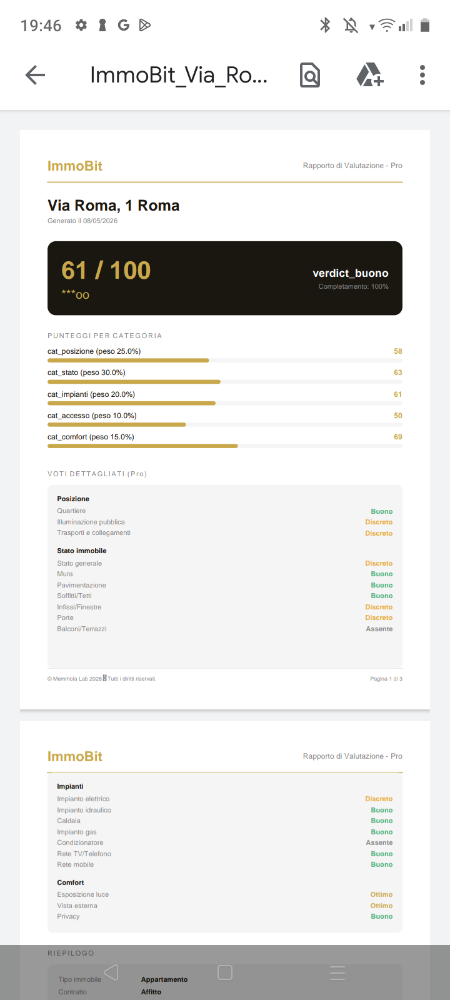
PDF · archivio
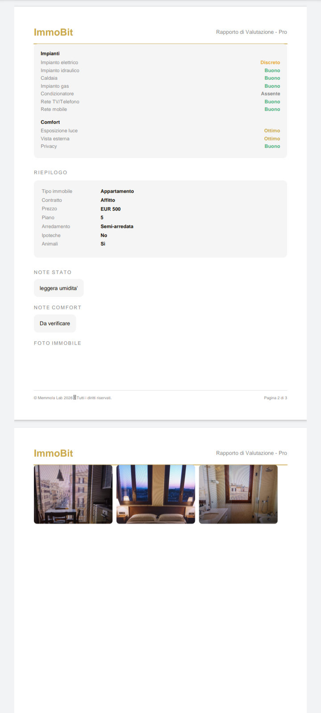
Report · memoria
Archivio interfaccia AutoBit
AutoBit introduce valutazione tecnica, confronto tra più auto, promemoria,
documentazione e report.
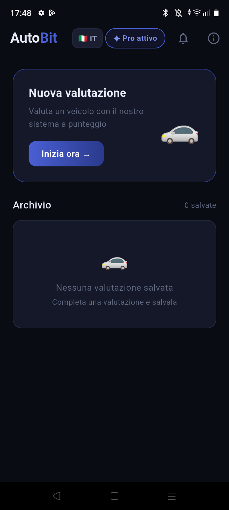
Home · analisi veicolo
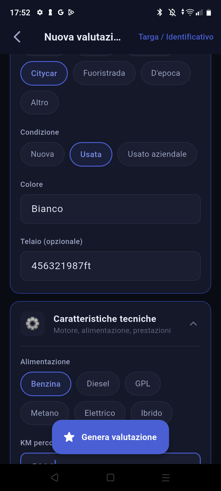
Checklist · ispezione
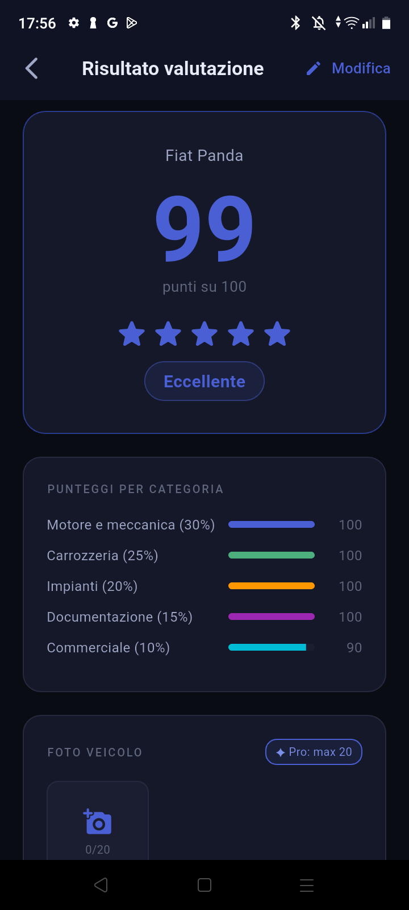
Scoring · lettura tecnica
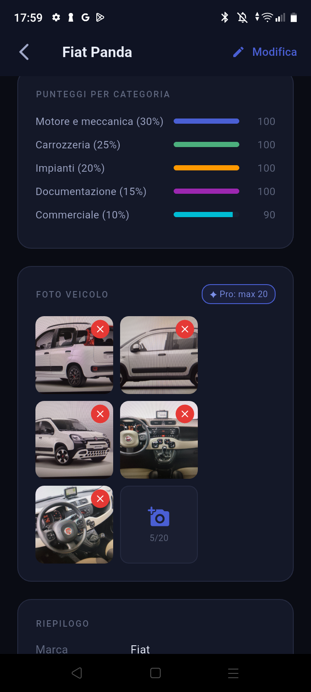
Report · valutazione
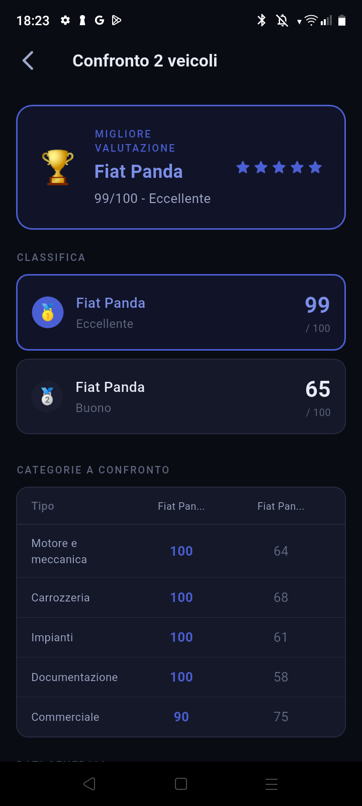
Confronto · più auto
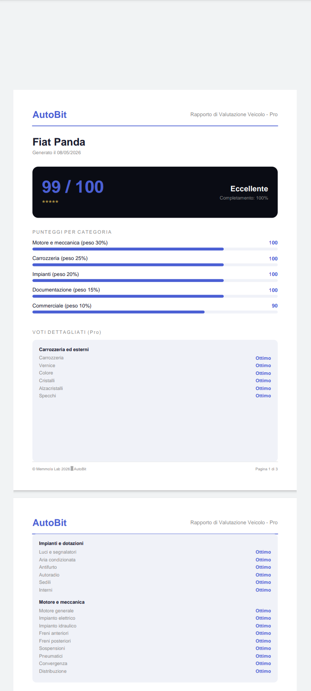
PDF · prova
// Universo condiviso
Separati all’inizio, collegati nel tempo
ImmoBit e AutoBit devono crescere come due serie autonome. Il crossover funziona solo se prima
il pubblico ha imparato a riconoscere i due mondi.
La collisione narrativa
Elena e Luca cercano la stessa cosa in due mercati diversi: la verità dietro le apparenze.
Quando si incontrano, il crossover non è un trucco: è una conseguenza naturale.
Fase 01
Identità separate
ImmoBit e AutoBit crescono con ritmo, casi e pubblico propri.
Fase 02
Legami invisibili
Luoghi, dettagli, aziende, quartieri e segnali iniziano a ripetersi.
Fase 03
Primo crossover
Elena e Luca si incontrano quando le loro indagini quotidiane toccano lo stesso problema.
// Pubblicazione
Solo dopo arriva la strategia social
La parte social non è l’origine: è la fase successiva. Prima nasce l’universo,
poi nasce il sistema per distribuirlo.
Episodio master
Ogni puntata nasce completa: leggibile sul sito, trasformabile in PDF,
pubblicabile come carousel e poi tagliabile in micro-scene.
Archivio grezzo · Episodio master e micro-scene
Come proseguire adesso
Ti consiglio questa pipeline:
1. Mantieni l’episodio “master”
Quello che abbiamo appena creato.
Formato:
completo
cinematografico
leggibile
perfetto per:
Facebook
X
LinkedIn
PDF carousel
sito web
Questo diventa:
la “versione regista”.
2. Taglialo in micro-scene verticali
Sì.
Assolutamente sì.
Questa è la vera mossa forte.
TikTok / Reels / Shorts
Non pubblichi il fumetto intero.
Pubblichi:
micro cliffhanger.
Micro-scene verticali
Le 12 vignette diventano quattro piccoli video verticali con hook, suspense e payoff.
Archivio grezzo · Struttura Short/Reel
STRUTTURA IDEALE SHORTS/REELS
VIDEO 1
Hook:
“L’appartamento perfetto”
Vignette:
1–3
Finale:
“Troppo perfetto…”
VIDEO 2
Vignette:
4–6
Finale:
“Aspetta…”
VIDEO 3
Vignette:
7–9
Finale:
“C’era un problema nascosto.”
VIDEO 4
Vignette:
10–12
Payoff finale:
“Le case parlano…”
Ritmo e canali
YouTube resta separato per ImmoBit e AutoBit. Gli altri social possono vivere come hub Memmola Labs,
con backstage, concept art, mini scene, dettagli UI e worldbuilding.
Archivio grezzo · Ritmo consigliato
Struttura consigliata
YouTube → canali separati
1 canale Immobit
1 canale Autobit
Pubblicazione:
1 episodio a settimana per canale
Quindi:
Martedì → Immobit
Venerdì → Autobit
Questo è PERFETTO perché:
ogni canale rimane coerente
l’algoritmo capisce il tema
il pubblico capisce cosa aspettarsi
non sparisci mai per una settimana
hai tempo umano per produrre bene
Archivio grezzo · LinkedIn e processo creativo
LinkedIn serve per:
raccontare il processo
AI pipeline
storytelling tech
UX narrativa
“how we built it”
Tu stai facendo:
narrative software branding
Ed è molto raro.
Non era solo pubblicità.
ImmoBit e AutoBit Stories sono diventate un universo narrativo costruito intorno a decisioni,
fiducia e dettagli nascosti. Le app sono reali, i problemi sono reali, e le storie servono
a mostrare cosa succede quando le persone imparano a guardare meglio.